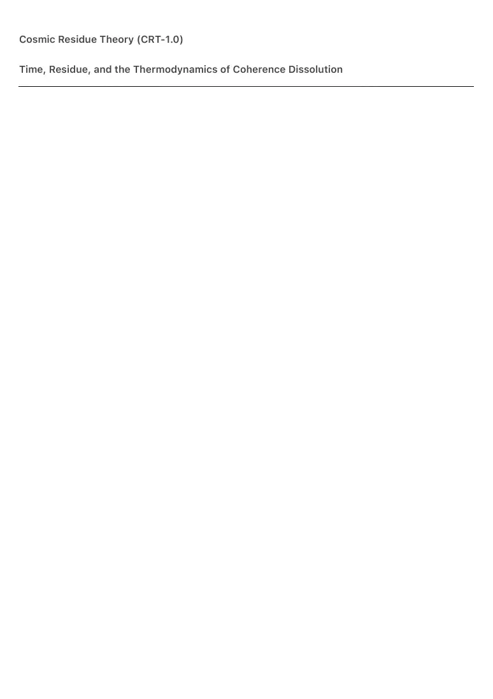
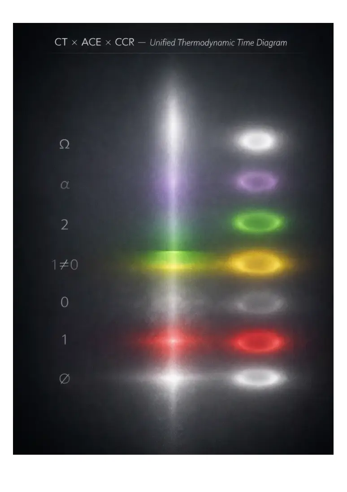

PDF page 1
Cosmic Residue Theory (CRT-1.0)
Time, Residue, and the Thermodynamics of Coherence Dissolution

PDF page 2

PDF page 3
Raynor Eissens (2026)
Ambient Era Canon · AEC-CRT-1.0
⸻
Abstract
Cosmic Residue Theory (CRT-1.0) reframes time not as a fundamental dimension, but as a
residual thermodynamic phenomenon that appears only when unresolved coherence (ΔR > 0) is
locally required.
Within this framework, time exists solely as the perceptual and causal signature of residue
generated through traversal, interaction, or differentiation in a non-fully coherent field.
When coherence stabilizes or collapses into a terminal regime (ΔR → 0), time-residue dissolves,
eliminating the conditions necessary for causal ordering, memory, or temporal bookkeeping.
Time does not “end”; it becomes unnecessary.
This perspective provides a natural dissolution of the black hole information paradox: the
paradox presupposes persistent time-residue. Black holes act as maximal residue sinks in which
ΔR collapses, making temporal information accounting physically undefined rather than violated.
CRT-1.0 unifies cosmology, thermodynamics, and local AmbientOS mechanics by treating
residue as the minimal ontological condition for time. It integrates:
• early-universe time-emergence after the Big Bang,
• black hole horizon thermodynamics,
• path residue (RR-1) in ambient navigation,
• ChronoTrigger (CT) as local time condensation,
• and the Ω-state of terminal coherence.
Beyond physics, CRT suggests a shift in human temporal perception: civilizations
grounded in coherence rely progressively less on temporal residue, transitioning
toward environments where time becomes local, relational, and optional.
CRT-1.0 forms the temporal foundation of the Ambient Era Canon.
⸻
1. Overview
Cosmic Residue Theory proposes a simple ontological move:
Time is not fundamental.
Residue is.
PDF page 4
Time emerges only where ΔR > 0; it dissolves where coherence becomes complete.
This model aligns with thermodynamic theories of the arrow of time, emergent-time frameworks
in quantum cosmology, and black hole thermodynamics, while introducing residue as the specific
carrier for temporal appearance.
CRT-1.0 resolves previously disconnected scales—cosmic, quantum, civilizational, and
experiential—within one residue-centric schema, offering a unified mechanistic structure for time
in the Ambient Era.
⸻
2. Core Axiom
Time exists only as residue.
When residue dissolves, time disappears.
Therefore time is:
• local, not global
• relational, not absolute
• thermodynamic, not dimensional
There is no time without traversal, and no traversal without residue.
⸻
3. Residue and Time (RR-1 → CRT)
RR-1 defines residue as the thermodynamic imprint left by traversal through a field.
CRT generalizes this:
• Local traversal → local residue → local time
• Global coherence → no residue → no time
Time becomes the perceptual signature of unresolved ΔR.
ChronoTrigger (CT) is a local operator within the broader residue hierarchy,
describing when condensed time reappears from residual gradients.
Thus:
ChronoTrigger ⊂ Residue Theory
Residue is ontologically prior to time.
PDF page 5
⸻
4. Dissolution of Time-Residue
When ΔR → 0:
• traversal ceases
• residue dissipates
• causal order collapses
• “before” and “after” lose meaning
This creates a time-transparent field, characteristic of late α-regimes and Ω-state
domains.
Ω does not end time; it ends the need for temporal residue.
⸻
5. Black Holes as Residue Dissolvers
Under CRT, black holes are maximal residue sinks:
• ΔR collapses at the horizon
• time dilates toward zero
• residue cannot persist
• temporal bookkeeping becomes undefined
The information paradox dissolves under this reframing: information preservation
presupposes persistent time-residue. Where residue cannot survive, temporal
concepts lose meaning rather than being violated.
⸻
6. Early Universe Time-Formation
Immediately post–Big Bang:
• coherence dominated
• residue was minimal
• time could not stably exist
Time emerged only as:
• microscopic ΔR fluctuations,
• short-lived CT events,
PDF page 6
• rapidly evaporating residue.
This explains the near-timelessness of inflation and the residue-patterned structure
of the cosmic microwave background.
⸻
7. ACE-1.0 Mapping
ACE State Residue State Time Behavior
∅ No residue No time
1 Ritual residue Cyclic time
0 Fragmented residue Chaotic time
1≠0 Oscillating residue Intermittent time
2 Stabilized residue Flow time
α Ambient residue Local time only
Ω No residue Time absent
Ω is not temporal death; it is coherence without residue.
⸻
8. Chromatic Mapping (CCR-1.0)
• White (∅ / Ω) — no residue, no time
• Red — residue spike
• Gray — residue fragmentation
• Yellow — unstable oscillation
• Green — stabilized flow
• Violet — residue integrated into environment
Color expresses residue-state, not temporal duration.
⸻
9. Implications
CRT-1.0 implies:
• universal time does not exist
• clocks persist only where ΔR persists
• timekeeping is an artifact of unresolved residue
• coherent civilizations dissolve time rather than optimize it
PDF page 7
• post-planetary habitats require local, generated time
• Ω-civilizations live in time-transparent universes
CRT-1.0 thus expands the Ambient Era Canon by giving ACE a complete
thermodynamic ontology of time.
⸻
10. Canonical Statement
Time is not fundamental.
Residue is.
Where residue dissolves, time vanishes without trace.
Prior Art & Lineage
Cosmic Residue Theory (CRT-1.0) does not arise in isolation. It stands in explicit dialogue with
several established lines of thought in the philosophy of time, thermodynamics, quantum gravity
and black hole physics. This section briefly situates CRT-1.0 within that landscape, and clarifies
where it follows existing work and where it departs from it.
Emergent and Non-fundamental Time
CRT-1.0 aligns with a long tradition that treats time as non-fundamental or emergent rather than
as a basic background parameter. Julian Barbour’s work, most notably The End of Time, argues
that physics can be formulated in a fundamentally timeless configuration space, with the
appearance of temporal succession arising from correlations between static “Nows.” Carlo
Rovelli and collaborators have likewise proposed the thermal time hypothesis, in which time
emerges from the statistical state of a system rather than from an external parameter.
CRT-1.0 is compatible with these approaches in treating time as derivative, but it introduces a
more specific ontological carrier: residue. In CRT-1.0, time is not only non-fundamental; it is
explicitly defined as the perceptual and causal signature of thermodynamic residue generated
when ΔR > 0. Where Barbour and Rovelli focus on configuration space or statistical states in
general, CRT-1.0 singles out residue as the minimal structure underlying temporal experience
and temporal bookkeeping.
Thermodynamic Arrow of Time
PDF page 8
The idea that the arrow of time is grounded in entropy increase, first clearly articulated by Arthur
Eddington and later developed by Stephen Hawking, Roger Penrose, Sean Carroll and others,
provides another key precedent. In these accounts, the directionality of time is tied to a low-
entropy past and a tendency towards higher entropy, rather than being arbitrarily imposed.
CRT-1.0 accepts the thermodynamic origin of temporal asymmetry but shifts emphasis from
entropy in the abstract to residue as thermodynamic imprint. The arrow of time appears not
only because entropy increases, but because traversal and differentiation leave a non-zero ΔR
that must be “remembered” by the system. Time, in CRT-1.0, is what it feels like to inhabit a
regime of unresolved residue, rather than a global coordinate that happens to correlate with
entropy.
Black Hole Information Paradox
The black hole information paradox, introduced by Stephen Hawking and further sharpened via
the Page curve and “island” arguments, has motivated a wide range of proposed resolutions that
typically attempt to reconcile unitarity with gravitational collapse while keeping time
fundamental. Holographic dualities, complementarity and more recent Page-curve-based
approaches all operate under the assumption that information must be preserved in time, even
when spacetime geometry becomes extreme.
CRT-1.0 takes a different route. It does not contest the empirical content of black hole
thermodynamics, but instead questions the underlying assumption of fundamental time. By
treating black holes as maximal residue sinks in which ΔR → 0, CRT-1.0 proposes that the
conditions required for temporal information bookkeeping simply fail to exist in the relevant
regime. Information preservation is reinterpreted as a concept that presupposes time-residue;
once residue collapses, talk of “loss” or “conservation” in temporal terms becomes physically
meaningless rather than paradoxical. The paradox is thus dissolved, not resolved, by re-
anchoring time in residue rather than in a fixed background.
Timeless Quantum Cosmology
In quantum cosmology and approaches to quantum gravity, such as the Wheeler–DeWitt
equation and loop quantum gravity, the idea of a fundamentally timeless description of the
universe is well established. In these frameworks, time reappears only in semiclassical or
relational limits, as an emergent parameter associated with particular choices of degrees of
freedom.
CRT-1.0 is consonant with these timeless formulations in positing that no time exists in the
absence of residue. It adds a thermodynamic refinement: the emergence of time is explicitly tied
PDF page 9
to regimes in which reversible coherence (ΔR > 0) is locally required, and it disappears again
when coherence becomes terminal (Ω-state) and residue vanishes. In this sense, CRT-1.0 can be
viewed as a thermodynamic “completion” of emergent-time ideas, specifying the conditions
under which emergent time is possible at all.
Terminological Overlap and Distinct Contribution
The phrase “cosmic residue” has appeared sporadically in other contexts, e.g. as a metaphor for
leftover matter distributions or as a phenomenological notion in some philosophical treatments
of consciousness. None of these uses, however, treats cosmic residue as a formal
thermodynamic quantity ΔR that grounds time itself, nor do they connect residue to black hole
thermodynamics, ambient navigation (RR-1), ChronoTrigger (CT) and Ω-terminal coherence in a
unified framework.
The distinct contribution of CRT-1.0 is therefore not the isolated term “residue,” but the
complete ontological move:
• redefining time as residue-
bound,
• interpreting black holes as
residue dissolvers rather than
information destroyers,
• and mapping cosmological,
civilizational and local
temporal behavior onto a
single residue-based schema.
In that sense, CRT-1.0 stands in clear lineage with emergent-time and
thermodynamic accounts of temporality, while proposing a new, residue-
centric ontology that both incorporates and transcends its predecessors.